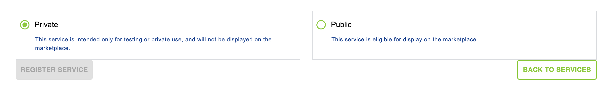

Manage your services
Services Overview
You arrive here by clicking on Services on the sub-navigation options of the portal. In addition to the main navigation for the portal, and the sub-navigation for the portal, you can see a Call to Action (CTA) button for Register your first service in the main body of the page. On first use, you won’t have created any services, so you will be presented with the first use screen. You can click on the CTA button to load the Add service page or click on the Learn how link to load the documentation page. If you have already created at least 1 service previously, you will see the screen below.
The services are shared within your oganization. If you are a member of multiple organizations, navigate to the profile page to change your
Linked Organization.

In the Services area, you can see cards for the services you have created, together with a card area with a Register service CTA button. On already created services, you can see an avatar (at this stage, just a colour and initials from the service name), the service name and a service status indication. As a user, you can click on the avatar or the service’s name to load its detail page. In addition, you can click on the Register service CTA button to load the add service page to create a new service.
Develop your service
A good integration in openEO algorithm plaza already starts when programming your algorithm.
In openEO, a ‘datacube’ view is used, which hides a lot of the complexity when working with huge EO data archives. It provides full archive access to the most popular datasets. You will have to get familiar with the Application Programming Interface (API), which provides a lot of predefined processes. To integrate existing code, you will have to use the concept of ‘User Defined Functions’ (UDFs). Parallelization and scalability are taken care of.
Working with openEO
A basic introduction on using openEO can be found here. To deploy your openEO algorithm as a service, we rely on the ‘user defined process’ functionality.
Write a good description
A good description of your service is key to attract users. Try to give a concise overview of the use cases your service was built for. Higher level services (Level-3 and -4) should also, when available, reference scientific literature and/or validation reports.
Examples of invocations and images of resulting output are a good way to help people getting started. Finally, a user may want to have an idea of the resource consumption and time required to run your service for a given input.
Register and publish your service
The final step as an algorithm/service developer is to publish the service on openEO algorithm plaza. This will make the service visible to other openEO algorithm plaza users, allowing them to incorporate and use the new service in their own workflows. The following sections will guide you through the publishing process.
Create a new service
The next step is to create a new entry on openEO algorithm plaza. This can be done in the Dashboard by selecting Services. The page provides an overview of all the services that are created within your organisation.

To register your service, click the Register your first service button. You will now be presented with a wizard to enter the necessary information regarding your service.
The first step requires you to select the type of service that you want to publish. Currently, the following types are supported:
- openEO - A service that is integrated through the openEO orchestrator
In the next step you can register the basic information for the service. The table below provides an overview of the different required fields:
| Field | Required | Description |
|---|---|---|
| Service name | Yes | Title of your service, as it will be displayed in the openEO algorithm plaza. |
| Summary | No | Short description of your service. The summary will be visible in the openEO algorithm plaza overview. |
| Description | No | Full description of your service. The description supports full Markdown syntax. |
| Avatar | No | URL to an image that can be used an avatar of your service. The avatar will be visible in the openEO algorithm plaza overview. |
Click Register Service to finish the basic registration. Finishing the basic registration allows you to provide more details on the service by either clicking the Next button or using one of the shortcuts on the navigation menu.
In the Media Files and Links section you can upload image that will be shown when a user views your service on the catalogue. You can add images by dragging and dropping files into the designated area or click the plus icon. Next to images, you can also specify the different multiple URLs that will be shown in the detailed information of the service.
The openEO Settings can be used to specify the openEO namespace and service ID of your service. Entering this information will enable the Access Service button, allowing visitors of openEO algorithm plaza to execute your service through the openEO Web Editor. The required information is represented in the following table:
| Field | Required | Description |
|---|---|---|
| Namespace | Yes | Namespace of openEO service. When the service was created through a User Defined Process (UDP), the namespace is formatted as u:<publisher username/id>. This information can be extracted from the public URL when creating and sharing the UDP through openEO. |
| Service name | Yes | Name of the service as shared within openEO. For a User Defined Process (UDP), the service name corresponds with the ID of the service. |
Upgrade your Service
In order to upgrade the level of service, service providers should improve their services and documentation in such a way that it meets the criteria (here) for the desired levels. Then a request can be made at our help center for upgrading the service.
Operate your services
Both the openEO algorithm plaza and orchestrators provide several procedures to operate your service. The following sections describe the different actions that can be taken to hide, suspend, and delete a service from openEO algorithm plaza.
Making a service to private
Changing the visibility of a service to private ensures that the service is not visible on openEO algorithm plaza. This can be useful to do some bug fixing, developments, and testing before publishing it to openEO algorithm plaza.
Changing a service’s visibility can be done by navigating to openEO algorithm plaza’s Dashboard. Select the Services submenu to get a list of all services that your organisation manages on openEO algorithm plaza. Next, select the service for which you want to change the visibility by clicking the corresponding entry in the list. This will open the service details. Scroll down to the Publishing settings where you can set the service’s visibility to private.

It is important to note that setting the visibility to private only hides the service in openEO algorithm plaza. Users are still able to view and execute the service through the orchestrators. The following sections provide additional information on how to remove your service from the openEO algorithm plaza and orchestrators.
Removing a service from openEO algorithm plaza
Similar to making a service private, a TPS can remove a service from openEO algorithm plaza. This will remove it from the openEO algorithm plaza service catalogue and delete all of its related data.
Removing a service is done by navigating to the service list on the Dashboard. Click the Services submenu to open a list of all services managed by your organisation. Next, select the service you would like to remove by clicking on its corresponding tile in the list. This will show the window to edit the service. At the bottom of the page, click the Remove button. A popup window will request your confirmation of deleting the service. Clicking Yes will remove the service from the openEO algorithm plaza and your organisation.

It is important to note that removing the service from the openEO algorithm plaza does not remove it from the orchestrators. Users are still able to execute the service through the orchestrators. The next section provides additional information on how to remove your service from the orchestrators.
Removing a service in the orchestrators
Removing a service from the orchestrators will disable its execution by any of the orchestrator’s users. The process of removing a service is depending on the orchestrator that was used to onboard the service.
openEO
openEO provides two ways to remove a service (also known as a user-defined process in openEO):
Using the OpenEO API
The process_graphs endpoint allows users to remove a service based on its ID. More information is available in the official API documentation.Using the openEO Python Client
The openEO Python Client supplies a delete function that can be executed for any user defined process that is managed by the authenticated user. More information is available in the official Python Client documentation.